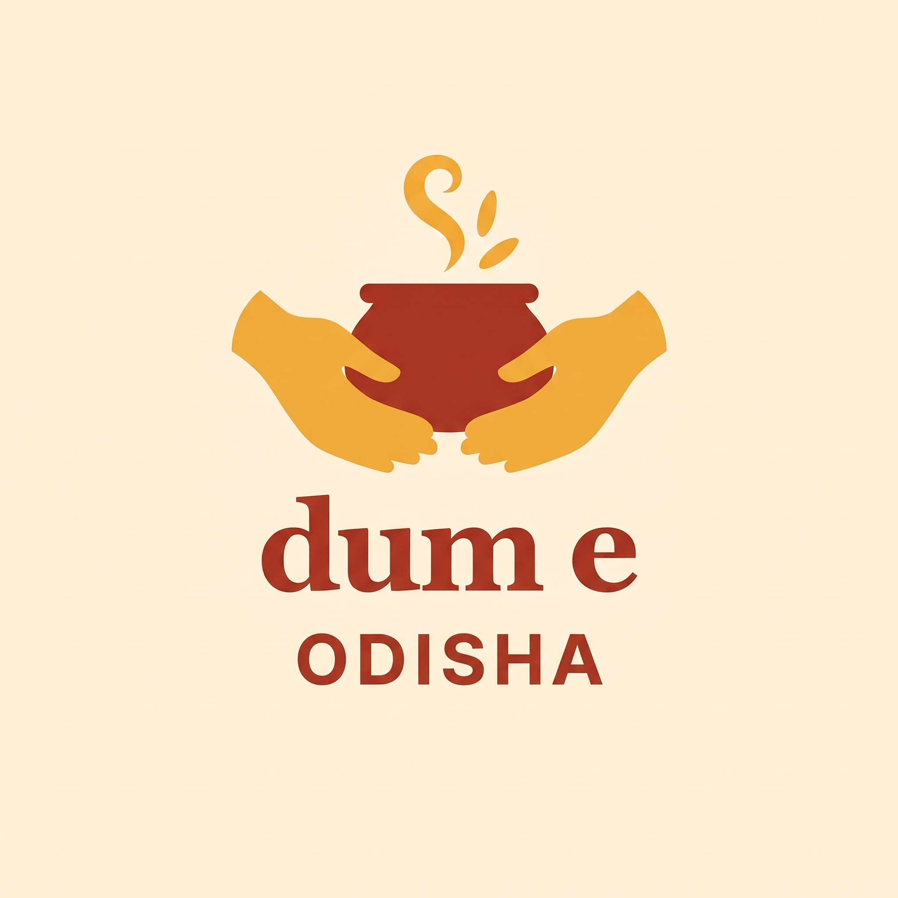
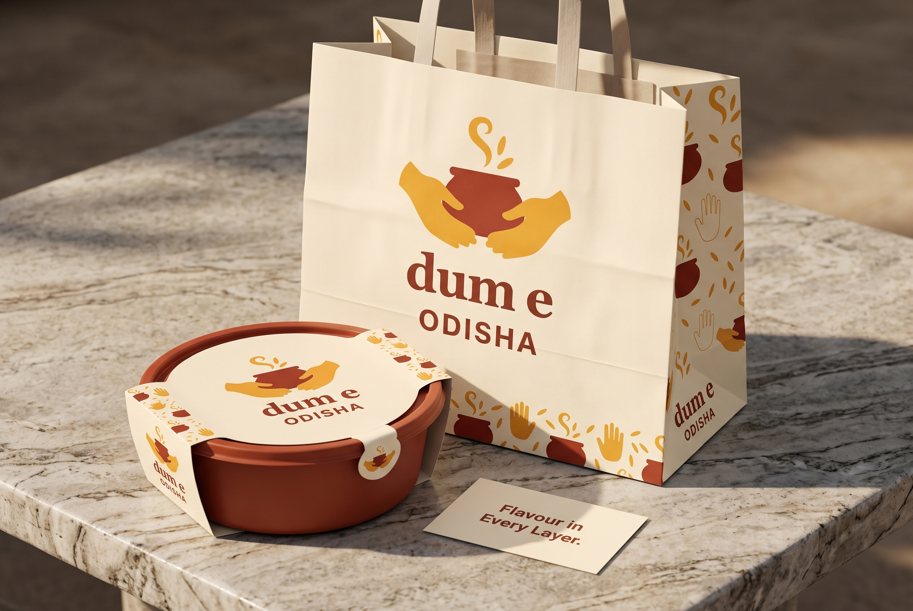
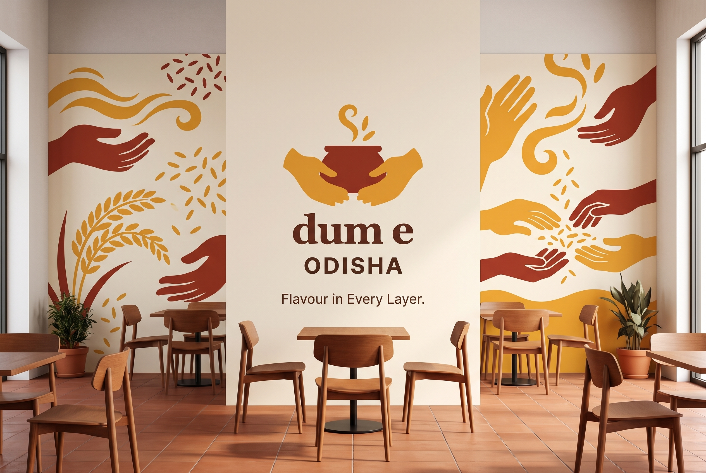

#A43B29Handi and name
The original visual idea, refined for the correct brand name and a complete set of applications.

Two open hands cradle a steaming handi: generosity, care and a meal offered warmly.
Name: Dum E Odisha
Tagline: Flavour in Every Layer.
The earlier reference used Biryani as part of the logo. This addition keeps the correct full brand name and clear spacing between Dum and E. Biryani remains category copy outside the name.
#A43B29Handi and name
#E9A82EWelcoming hands and aroma
#FFF4DEBackground
#423027Functional copy
Preserve the source’s warm expressive lettering; use a simple sans-serif for menu details, prices and supporting information. The logo is generated artwork, not a claim to an exact font family.
Palette values are targets; generated raster tones vary. Exact inks need production artwork and physical proofs.
Welcoming hand gestures, short aroma curls and rice accents; a generous, open composition.
A carrier, container and supporting details apply this route to the meal.

The mark anchors a larger illustrated interior. Extend the graphic language onto a feature wall while leaving space around the name.

These additions reinterpret your earlier Nano Banana concepts; they do not replace the ten existing routes. The original versions remain in history.
All new artwork and mockups were generated through Nano Banana MCP. High-resolution raster studies with opaque backgrounds; editable vector masters, fabrication dimensions, print separations and final production artwork are not included.